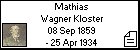
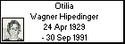

l i n k s
Siblings:
Eduardo Wagner Hipedinger
Matías Albicio Wagner Hipedinger
Ana María Wagner Hipedinger
Susana Wagner Hipedinger
Manuel Wagner Hipedinger
Luisa Wagner Hipedinger
Martha Wagner Hipedinger
Rodolfo (Loto) Wagner Hipedinger
Juana Dominga Wagner Hipedinger
Margarita Wagner Hipedinger
Fernando Wagner Hipedinger
Otilia Wagner Hipedinger
Otilia Wagner Hipedinger
Born: 24 Apr 1929, Hinojo - Buenos Aires - Argentina
Married to
Agustin Rypstra
Died: 30 Sep 1991, Hinojo - Buenos Aires - Argentina
Foto tomada en 1968, Comunión de su hijo Alberto Rypstra.-
Generated by
GenDesigner 2.0 beta 3.6